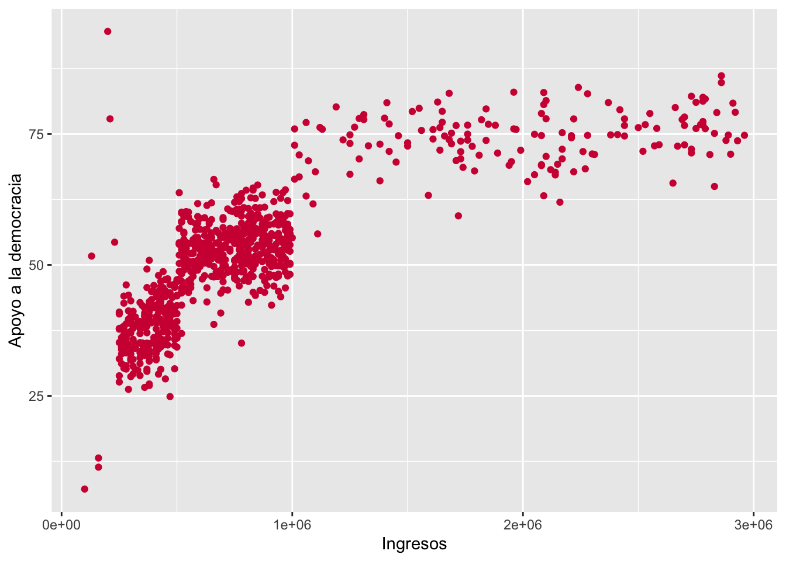

library(dplyr)
library(sjPlot)
library(sjmisc)Sesión 7: Preparación práctica para la prueba
Resolviendo la prueba del año pasado
Qué veremos
- En esta sesión resolveremos la prueba del año pasado, para que puedan practicar y familiarizarse con el tipo de preguntas que se hacen en la prueba.
Carguemos la paquetes y la Base
Si no te funciona el código, prueba con este:
install.packages("pacman")
pacman::p_load(dplyr,sjPlot,sjmisc)Ahora la base.
load(url("https://zenodo.org/records/23648112/files/dataset1.RData")) Cómo buscar los códigos
La clave para conseguir los códigos es utilizar La página del curso. Estaremos practicando esto en el práctico
Criterios para reportar los resultados
- Visualización: ¿qué patrón muestra el gráfico?
- Elección del coeficiente: ¿por qué Pearson, Spearman o Kendall? (nivel de medición, distribución, tamaño de la muestra)
- Sentido: positivo o negativo, y qué significa sustantivamente
- Magnitud: ¿Qué tan cerca de 0 o |1| está el coeficiente?
- Inferencia: hipótesis, valor , decisión respecto a y nivel de confianza
- Casos perdidos: N utilizado y tratamiento de los NA
- Conclusión sustantiva: responder la pregunta de investigación en lenguaje sociológico, sin afirmar causalidad
NoteRecuerda que así se ve la diferencia entre variables cualitativas y cuantitativas, y sus niveles de medición
| Naturaleza | Nivel de medición | ¿Cuándo se usa? | Ejemplo |
|---|---|---|---|
| Cualitativa | Nominal | Cuando las categorías no tienen ningún orden lógico entre sí | Sexo, nacionalidad, color de ojos |
| Cualitativa | Ordinal | Cuando las categorías sí tienen un orden, pero la distancia entre ellas no es constante ni medible | Nivel educacional, escala Likert (muy en desacuerdo a muy de acuerdo) |
| Cuantitativa discreta | Intervalo | Cuando los valores son numéricos enteros/contables, con distancias iguales pero sin cero absoluto (el cero es arbitrario) | Año calendario, número de siglo o década |
| Cuantitativa discreta | Razón | Cuando los valores son numéricos enteros/contables, con distancias iguales y con cero absoluto | Número de hijos, número de goles, cantidad de hermanos |
| Cuantitativa continua | Intervalo | Cuando los valores pueden tomar cualquier valor dentro de un rango (decimales incluidos), con distancias iguales pero sin cero absoluto | Temperatura en °C |
| Cuantitativa continua | Razón | Cuando los valores pueden tomar cualquier valor dentro de un rango (decimales incluidos), con distancias iguales y con cero absoluto | Edad, ingreso, peso, velocidad (km/h) |
Preguntas
Pregunta 1 ¿En qué medida se relacionan los ingresos (en pesos) de las personas con sus niveles de apoyo a la democracia?
1.1 Estime la correlación entre ambas variables utilizando R y genere un diagrama de dispersión (nube de puntos/scatterplot). Corte y pegue el código en el recuadro de abajo. (1p)
Acá nos piden hacer un análisis de correlación entre dos variables cuantitativas continuas: ingresos y apoyo a la democracia. Para ello, utilizaremos el coeficiente de correlación de Pearson, que es apropiado para variables continuas y normalmente distribuidas, de la siguiente manera:
cor.test(dataset1$ingresos, dataset1$apoyo_dem, complete.obs = TRUE, method = "pearson")
Pearson's product-moment correlation
data: dataset1$ingresos and dataset1$apoyo_dem
t = 39.93, df = 839, p-value < 2.2e-16
alternative hypothesis: true correlation is not equal to 0
95 percent confidence interval:
0.7847979 0.8315542
sample estimates:
cor
0.8094554 sjPlot::plot_scatter(data = dataset1, x = ingresos, y = apoyo_dem)
1.2 Justifique la elección del coeficiente de correlación seleccionado e interprete el resultado considerando visualización, inferencia estadística, magnitud y sentido del efecto. (3p)
Se empleó el coeficiente de correlación de Pearson debido a la naturaleza de las variables, en tanto ingresos y apoyo_dem corresponden a variables númericas de razón. El coeficiente da cuenta de una relacion positiva y grande, siguiendo los criterios de Cohen (1988) (\(r\) = 0.80). Es decir, a medida que aumentan los ingresos de las personas, también aumentan sus niveles de apoyo_dem. La relación es estadísticamente significativa (\(p\) < 0.001), por ende es posible rechazar \(H_0\) sobre no asociación entre variables, entregando evidencia a favor de una relación entre ambas variables con un 99.9% de confianza.
Pregunta 2: ¿Cómo se relacionan el sexo, apoyo a la democracia y los ingresos?
2.1 Estime y reporte la matriz de correlaciones de las variables sexo, apoyo a la democracia y los ingresos. Corte y pegue el código de R correspondiente (1p)
Acá nos piden calcular la matriz de correlaciones entre las variables sexo, apoyo_dem y ingresos. Dado que sexo es una variable cualitativa nominal, utilizaremos el coeficiente de correlación de Pearson para las variables cuantitativas y el coeficiente de correlación punto-biserial para la relación entre sexo y las otras dos variables. El código en R sería el siguiente:
cormat <- dataset1 %>%
dplyr::select(sexo, apoyo_dem, ingresos)
sjPlot::tab_corr(cormat,
na.deletion = "pairwise", # espeficicamos tratamiento NA
triangle = "lower")| Sexo | Apoyo a la democracia | Ingresos | |
|---|---|---|---|
| Sexo | |||
| Apoyo a la democracia | -0.037 | ||
| Ingresos | -0.030 | 0.809*** | |
| Computed correlation used pearson-method with pairwise-deletion. | |||
sjPlot::tab_corr(cormat,
na.deletion = "listwise", # espeficicamos tratamiento NA
triangle = "lower")| Sexo | Apoyo a la democracia | Ingresos | |
|---|---|---|---|
| Sexo | |||
| Apoyo a la democracia | -0.038 | ||
| Ingresos | -0.027 | 0.809*** | |
| Computed correlation used pearson-method with listwise-deletion. | |||
2.2a ¿Qué correlaciones de la matriz son estadísticamente significativas?¿Con qué nivel de confianza se puede rechazar la hipótesis nula en estos casos? (1p)
- Pairwise: La correlación de Pearson entre ingresos y apoyo_dem es positiva y estadísticamente significativa (\(r\) = 0.809, \(p\) < 0.001). La hipótesis nula se puede rechazar con un 99.9% de confianza. * Listwise: La correlación de Pearson entre ingresos y apoyo_dem es positiva y estadísticamente significativa (\(r\) = 0.809, \(p\) < 0.001). La hipótesis nula se puede rechazar con un 99.9% de confianza.
2.2b ¿Qué decisión tomó sobre los casos perdidos en el cálculo de la matriz? ¿Por qué?(1p)
- Pairwise: Se optó por el método de eliminación de pares (pairwise) para el tratamiento de casos perdidos con el fin de mantener la mayor cantidad de casos a la hora de calcular los coeficientes de correlación.
- Listwise: Se optó por el método de eliminación por lista (listwise) para el tratamiento de casos perdidos con el fin de mantener el mismo número de casos para todas las correlaciones.
2.2c ¿Cómo se denomina el tipo de correlación que se calcula entre sexo e ingreso? (1p)
- La correlación entre la variable sexo (0=“Hombre”; 1=“Mujer”) y la variable continúa ingresos se denomina correlación punto biserial.
Pregunta 3: ¿Cómo se relaciona el sexo con los ingresos?
3.1 Reporte tabla de contingencia y el cálculo de Chi2. Corte y pegue el código abajo. (1p)
Acá nos piden calcular la tabla de contingencia entre las variables sexo e ingresos, y realizar el test de Chi-cuadrado para evaluar la asociación entre ambas variables. El código en R sería el siguiente:
pacman::p_load(sjPlot)
dataset1 %>%
sjtab(sexo,
ingresos_rec)| Sexo | Ingresos recodificado |
Total | ||
|---|---|---|---|---|
| Bajos ingresos | Medios ingresos | Altos ingresos | ||
| Hombre | 162 | 262 | 103 | 527 |
| Mujer | 92 | 180 | 51 | 323 |
| Total | 254 | 442 | 154 | 850 |
| χ2=3.292 · df=2 · Cramer's V=0.062 · p=0.193 | ||||
chisq.test(dataset1$sexo, dataset1$ingresos_rec) # adicional, ya que el Chi2 aparece en sjtab
Pearson's Chi-squared test
data: dataset1$sexo and dataset1$ingresos_rec
X-squared = 3.2921, df = 2, p-value = 0.19283.2 Interprete el Chi2 en términos de inferencia y magnitud del efecto. (2p)
χ2=3.292 · df=2 · Cramer’s V=0.062 · p=0.193
Chi cuadrado no es estadísticamente significativo (1pt)
(p > 0.05) (1pt)
tamaño de efecto pequeño/débil según la V de Cramer (1pt)
3.3 A Chi2 también se le denomina “test de diferencia”, ¿Qué es lo que se compara para hacer esta diferencia? (1p)
En el test Chi-cuadrado se comparan las frecuencias observadas en cada categoría de una tabla de contingencia con las frecuencias esperadas bajo la hipótesis nula de independencia o no asociación.
En otras palabras, se mide la diferencia entre lo que efectivamente se observa en los datos y lo que se esperaría si no existiera relación entre las variables. Cuanto mayores sean esas diferencias (ajustadas al tamaño de la muestra), mayor será el valor de χ2.
Ahora tú
Calcula la correlación entre sexo y apoyo a la democracia y reportala:
Recomendaciones
- Llegar unos minutos antes del inicio de la prueba (8:30) para prender su computador, abrir Positron, u-cursos, etc. y así aprovechar al máximo el tiempo disponible para la prueba.
- Responder las preguntas de la prueba en un archivo de código de .R, y al final cortar y pegar las respuestas en el formulario que les darán
- Se sugiere guardar sus respuestas en un documento aparte para tenerlo como respaldo.